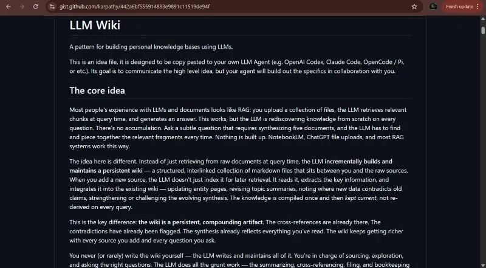
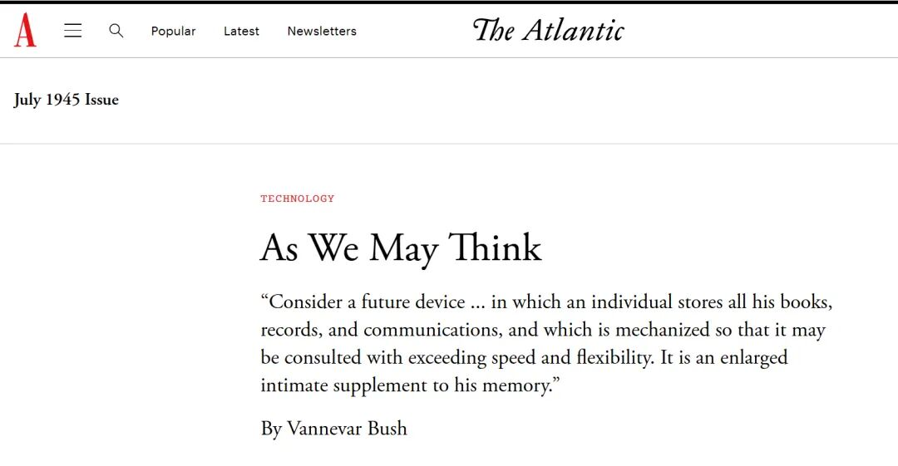

K神开源了个人的“LLM wiki”，提出LLM的角色要从无状态的信息检索者升级成有状态的知识管理者，并提到了Vannevar Bush。这一下子点燃了我的兴趣，于是决定翻译并写点什么。知识积累与链接，Memex 这些感觉已是上个世纪的话题，终于在LLM时代迎来了一波注意力。

积累知识，而不是重复检索。RAG 是后者：每次都重新喂文件或文件堆，每次LLM都要重新看一遍，信息被反复“夹进三明治”。
知识的积累就是链接（link）， Karpathy 提出让LLM在“链接”这件事上下功夫 -- 构建和维护一个结构化的、互联的 md文件系统，这些文件基于你的原始数据或资源生成 (a structured, interlinked collection of markdown files that sits between you and the raw sources.)。
那么，这与RAG的体验有什么不同呢？
当我们上传一个新的文件的时候，LLM的思路不再是将其编入索引以便日后检索。而是先读取，摘要出核心内容，然后整合到Wiki中。这与知识管理爱好者我们曾经手动/工整理知识图谱的过程非常相近- 标记冲突，迭代总结，更新 [[概念]]：
新资源进入wiki，更新概念的 [[page]]，迭代总结摘要 (summary)，尤其注意标记（flag）新数据与历史记录的冲突域。这个Wiki会根据你添加的每一个资源、问的每一个有价值的问题而动态更新，变得更丰富。
做一个类比的话，RAG 是 LLM 每次去图书馆现翻书；LLM Wiki 是你养成一个 librarian，每天整理新书、更新目录、做交叉引用，LLM基于已经组织并理解的wiki进行回答。
对于项目团队如何用LLM如何来维护这样一个内部知识库，并在团队成员之间协作是我目前最感兴趣的。维护一个内部的项目管理，会议摘要(meeting transcript/summary)、项目文件(project documents)、与客户面见记录（customer calls/meetings），期间加入必需的人工审核检验（review）。
架构
下面我们来看一下这个LLM文件系统的三层架构：
第一层Source：Raw Recourse（原始资源集），真相来源。这些数据是不可更改的——LLM 会读取它们，但不会修改它们。
说白点也就是你收集的一系列原始的文件资料，例如事无巨细的会议记录 as it is。
第二层Directory：一个由LLM生成的Markdown文件的目录，所有权归LLM所有。他负责建立标准化的[[page]]，随着新信息的进入进行更新，进行交叉引用和链接，维护知识库的一致性。
第三层Schema：配置文件（例如 Claude Code 的 CLAUDE.md 或 Codex 的 AGENTS.md）是一份说明书，它要定义 LLM wiki 的结构、约定俗成的规则以及在导入资源、回答问题或维护 wiki 时应遵循的工作流程。它使 LLM 成为一个规范的 wiki 维护者，一个librarian，而不是一个普通的聊天机器人。随着时间的推移，你和 LLM 会共同完善这个模式文件，并不断探索哪些方法适用于你的领域。
我突然想到skill是不是就是这种文件呢？不完全是。Skill 是用来生成 [[page]].md 的文件。比如 Meeting Summary Skill，会把会议记录转成会议摘要（会议摘要-日期.md），再根据 Schema 提取信息进入需要维护的页面，如 [[sales signal pipeline]].
Skill 是工具，Schema 是规则手册。你可以把多个 Skill 组织在 Schema 定义的流程里。
操作
好，下面我们来看实际操作过程。
摄入：新资源/信息进来。
检索：对Wiki进行提问。一个重要的点是：当得到好的回答（回答需要带引用来源）时，这个问题和回答也可以成为新的page。
Lint：LLM需要定期对wiki进行健康检查。检查内容包括：页面之间的矛盾、已被新资料取代的过时说法、没有外部链接的孤立页面、提及但缺少独立页面的重要概念、缺失的交叉引用以及可以通过网络搜索填补的数据空白。LLM擅长提出新的研究问题和新的参考资料。这有助于wiki在发展过程中保持健康。
Why Bush here?
1945年 Vannevar Bush 的Memex，一个个人的互联文件系统（感受这个被我过分简化形容的伟大想法，请阅读 As we may think https://www.theatlantic.com/magazine/archive/1945/07/as-we-may-think/303881/)。

我是 Bush 的忠粉儿：
探索语言、人工智能和语义网络的交叉：从知识参考网络到增强协作的人工智能
后记
要建立一个什么样的Wiki，积累什么知识是重要的首要问题。比如最近的一个实际非个人需求：产品的销售信号面板。这个东西非常具体，原始资料就是人（销售带来的信息），我需要探索的是中间层，将信息转化为结构化的pipeline，在时间的积累中发现信号与链接。
当然，Karpathy 的架构是一个好的思路和基础，但实践的过程绝非易事：不是所有原始资料都值得进入 Directory，且 Schema 里应该定义怎样的过滤规则，可能是最具有挑战性的。
原文链接：https://gist.github.com/karpathy/442a6bf555914893e9891c11519de94f
原文作者：Andrej Karpath